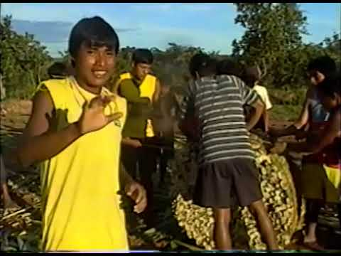

Skip to content
Boe Eno Moto
☰
Dictionary
Encyclopedia
Fauna
Ethnobotany
Bibliography
Videos
PT
/
EN
Videos
Video recordings of Bororo culture — 10 videos
All categories
Funeral Bororo
ritual
Aroe eceba
ritual
Lugares históricos: Bororo e Xavante
história

Festa do Mano Kurireu: Ritual Boe-Bororo
ritual
Kado Rairewy
ritual
Construção da casa central (bai mana gejewy) de uma aldeia Bororo
cultura
Kuiada paru (festa bororo do milho)
ritual
Akurarorewy
ritual
Iniciação do jovem Xavante (1999, Meruri)
ritual
Ritual do Marido e funeral (1989, Aldeia Garças)
ritual